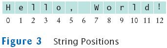

String greeting = "Hello, World!";
String sub = greeting.substring(0, 5); // sub is "Hello"


| Type |
Description |
Size |
| int |
The integer type, with range -2,147,483,648 . . . 2,147,483,647 | 4 bytes |
| byte |
The type describing a single
byte, with range -128 . . . 127 |
1 byte |
| short |
The short integer type, with
range -32768 . . . 32767 |
2 bytes |
| long |
The long integer type, with range -9,223,372,036,854,775,808 . . . -9,223,372,036,854,775,807 | 8 bytes |
| double |
The double-precision
floating-point type, with a range of about ±10308 and
about 15 significant decimal digits |
8 bytes |
| float |
The single-precision floating-point type, with a range of about ±1038 and about 7 significant decimal digits | 4 bytes |
| char |
The character type, representing
code units in the Unicode encoding scheme |
2 bytes |
| boolean |
The type with the two truth
values false and true |
1 bit |
Example:
Purpose:To convert an expression to a different type |
final double QUARTER_VALUE = 0.25;
final double DIME_VALUE = 0.1;
final double NICKEL_VALUE = 0.05;
final double PENNY_VALUE = 0.01;
payment = dollars + quarters * QUARTER_VALUE + dimes * DIME_VALUE
+ nickels * NICKEL_VALUE + pennies * PENNY_VALUE;
public class Math
{
. . .
public static final double E = 2.7182818284590452354;
public static final double PI = 3.14159265358979323846;
}
double circumference = Math.PI * diameter;
Example:
Purpose:To define a constant in a method or a class |
Change=0.25
Change=2.0
n--;
n++;
n--;
final int PENNIES_PER_NICKEL = 5;
final int PENNIES_PER_DIME = 10;
final int PENNIES_PER_QUARTER = 25;
final int PENNIES_PER_DOLLAR = 100;
// Compute total value in pennies
int total = dollars * PENNIES_PER_DOLLAR + quarters * PENNIES_PER_QUARTER
+ nickels * PENNIES_PER_NICKEL + dimes * PENNIES_PER_DIME + pennies;
// Use integer division to convert to dollars, cents
int dollars = total / PENNIES_PER_DOLLAR;
int cents = total % PENNIES_PER_DOLLAR;
| Math.sqrt(x) |
square root |
| Math.pow(x, y) |
power xy |
| Math.exp(x) |
ex |
| Math.log(x) |
natural log |
| Math.sin(x), Math.cos(x), Math.tan(x) |
sine, cosine, tangent (x in radian) |
| Math.round(x) |
closest integer to x |
| Math.min(x, y), Math.max(x, y) |
minimum, maximum |
double x = 4;
double root = x.sqrt(); // Error
Math
System.out
Example:
Purpose:To invoke a static method (a method that does not operate on an object) and supply its parameters |
String name = "Dave";
String message = "Hello, " + name;
// message is "Hello, Dave"
String a = "Agent";
int n = 7;
String bond = a + n; // bond is Agent7
System.out.print("The total is ");
System.out.println(total);
versus
System.out.println("The total is " + total);
String greeting = "Hello, World!";
String sub = greeting.substring(0, 5); // sub is "Hello"
Scanner in = new Scanner(System.in);
System.out.print("Enter quantity: ");
int quantity = in.nextInt();
Enter price: 7.55 Enter dollars: 10 Enter quarters: 2 Enter dimes: 1 Enter nickels: 0 Enter pennies: 0 Your change is 3.05